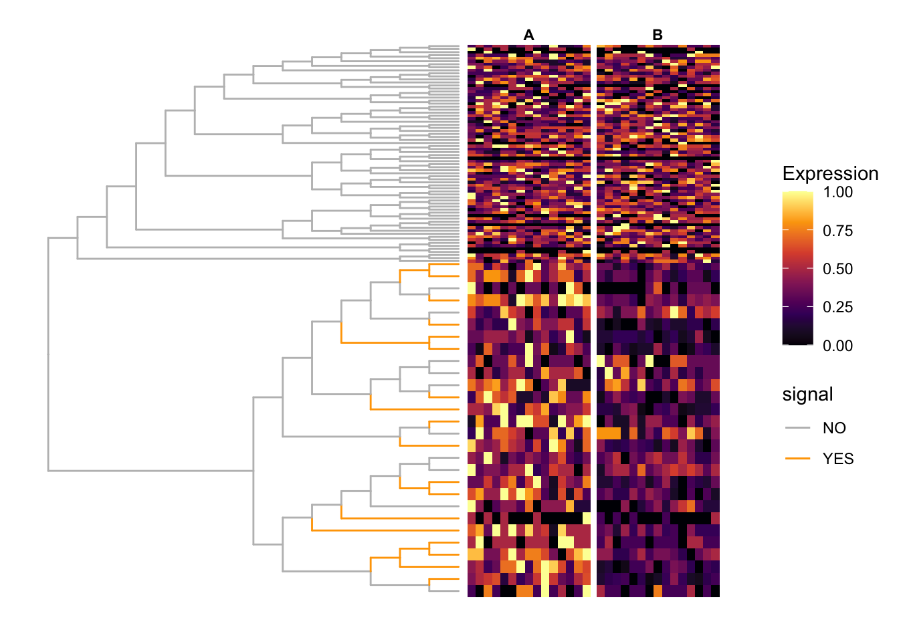

Toy example with 18 DA leaves
fionarhuang
2020-03-15
Last updated: 2020-04-23
Checks: 7 0
Knit directory: treeclimbR_toy_example/
This reproducible R Markdown analysis was created with workflowr (version 1.5.0). The Checks tab describes the reproducibility checks that were applied when the results were created. The Past versions tab lists the development history.
Great! Since the R Markdown file has been committed to the Git repository, you know the exact version of the code that produced these results.
Great job! The global environment was empty. Objects defined in the global environment can affect the analysis in your R Markdown file in unknown ways. For reproduciblity it’s best to always run the code in an empty environment.
The command set.seed(20200315) was run prior to running the code in the R Markdown file. Setting a seed ensures that any results that rely on randomness, e.g. subsampling or permutations, are reproducible.
Great job! Recording the operating system, R version, and package versions is critical for reproducibility.
Nice! There were no cached chunks for this analysis, so you can be confident that you successfully produced the results during this run.
Great job! Using relative paths to the files within your workflowr project makes it easier to run your code on other machines.
Great! You are using Git for version control. Tracking code development and connecting the code version to the results is critical for reproducibility. The version displayed above was the version of the Git repository at the time these results were generated.
Note that you need to be careful to ensure that all relevant files for the analysis have been committed to Git prior to generating the results (you can use wflow_publish or wflow_git_commit). workflowr only checks the R Markdown file, but you know if there are other scripts or data files that it depends on. Below is the status of the Git repository when the results were generated:
Ignored files:
Ignored: .DS_Store
Ignored: .Rhistory
Ignored: .Rproj.user/
Unstaged changes:
Modified: analysis/index.Rmd
Note that any generated files, e.g. HTML, png, CSS, etc., are not included in this status report because it is ok for generated content to have uncommitted changes.
These are the previous versions of the R Markdown and HTML files. If you’ve configured a remote Git repository (see ?wflow_git_remote), click on the hyperlinks in the table below to view them.
| File | Version | Author | Date | Message |
|---|---|---|---|---|
| Rmd | fb2dbda | fionarhuang | 2020-04-23 | turn off the option of recreate gif |
| html | 2fc6fe9 | fionarhuang | 2020-04-23 | Build site. |
| Rmd | 49a1b4d | fionarhuang | 2020-04-23 | customize the website |
| html | 5665295 | fionarhuang | 2020-04-23 | Build site. |
| Rmd | 85e6aa2 | fionarhuang | 2020-04-23 | publish Rmd files |
knitr::opts_chunk$set(echo = TRUE, warning=FALSE, message = FALSE)Data simulation
suppressPackageStartupMessages({
library(ggplot2)
library(ggtree)
library(dplyr)
library(treeclimbR)
library(TreeSummarizedExperiment)
library(ape)
library(cowplot)
library(scales)
library(TreeHeatmap)
library(gganimate)
library(ggnewscale)
})Data
A random tree.
set.seed(2020)
n <- 100
tr <- rtree(n)# generate a random probability vector for leaves
p <- runif(n = n, 0, 1)
p <- p/sum(p)
names(p) <- tr$tip.labelHere, some leaves are selected to have differences between groups.
# Leaves are selected from the same branch to simplify the visualtion later (e.g., zoom in)
df <- selNode(pr = p, tree = tr, all = TRUE)
nd <- df %>%
filter(numTip > 20 & numTip < 30) %>%
top_n(1) %>%
select(nodeNum) %>%
unlist()
# random select 18 leaves from the branch
m <- 18
lf <- unlist(findOS(tree = tr, node = nd, only.leaf = TRUE))
lfs <- sample(lf, size = m, replace = FALSE)
lfs <- transNode(tree = tr, node = lfs)# samples in two groups
nSam <- c(15, 15)
gr <- rep(LETTERS[1:2], nSam)
# fold change
fc <- 2
# counts
count <- rmultinom(n = sum(nSam), size = 500, prob = p)
rownames(count) <- names(p)
# multiply counts of selected leaves with 3 in the first group
count[lfs, seq_len(nSam[1])] <- count[lfs, nSam[1]+seq_len(nSam[1])]*fc
colnames(count) <- paste(gr, seq_len(sum(nSam)), sep = "_")The tree and count table are stored as a TSE object.
# build TSE
lse <- TreeSummarizedExperiment(assays = list(count),
colData = data.frame(group = gr),
rowTree = tr)Viz data
# color branch
nds <- signalNode(tree = tr, node = lfs)
br <- unlist(findOS(tree = tr, node = nds,
only.leaf = FALSE, self.include = TRUE))
df_color <- data.frame(node = showNode(tree = tr, only.leaf = FALSE)) %>%
mutate(signal = ifelse(node %in% br, "YES", "NO"))
fig_0 <- ggtree(tr = tr, layout = "rectangular",
branch.length = "none",
aes(color = signal)) %<+% df_color +
scale_color_manual(values = c("NO" = "grey", "YES" = "orange"))
fig_1 <- scaleClade(fig_0, node = nd, scale = 4)
# counts
count <- assays(lse)[[1]]
# scale counts
scale_count <- t(apply(count, 1, FUN = function(x) {
xx <- x
rx <- (max(xx)-min(xx))
(xx - min(xx))/max(rx, 1)
}))
rownames(scale_count) <- rownames(count)
colnames(scale_count) <- colnames(count)
# fig: tree + heatmap
vv <- gsub(pattern = "_.*", "", colnames(count))
names(vv) <- colnames(scale_count)
fig <- TreeHeatmap(tree = tr, tree_fig = fig_1, hm_data = scale_count,
column_split = vv, rel_width = 0.6, tree_hm_gap = 0.3) +
scale_fill_viridis_c(option = "B")
fig
| Version | Author | Date |
|---|---|---|
| 5665295 | fionarhuang | 2020-04-23 |
Data aggregation
all_node <- showNode(tree = tr, only.leaf = FALSE)
tse <- aggValue(x = lse, rowLevel = all_node, FUN = sum)Differential analysis
wilcoxon sum rank test is peformed on all nodes
# wilcox.test
test.func <- function(X, Y) {
Y <- as.numeric(factor(Y))
obj <- apply(X, 1, function(x) {
p.value <- suppressWarnings(wilcox.test(x ~ Y)$p.value)
e.sign <- sign(mean(x[Y == 2]) - mean(x[Y == 1]))
c(p.value, e.sign)
})
return(list(p.value=obj[1, ], e.sign=obj[2, ]))
}
Y <- colData(tse)$group
X <- assays(tse)[[1]]
resW <- test.func(X,Y)
outW <- data.frame(node = rowLinks(tse)$nodeNum,
pvalue = resW$p.value,
sign = resW$e.sign)run treeclimbR
# get candidates
cand <- getCand(tree = rowTree(tse), score_data = outW,
node_column = "node", p_column = "pvalue",
threshold = 0.05,
sign_column = "sign", message = TRUE)# evaluate candidates
best <- evalCand(tree = tr, levels = cand$candidate_list,
score_data = outW, node_column = "node",
p_column = "pvalue", sign_column = "sign")
infoCand(object = best) t upper_t is_valid method limit_rej level_name best rej_leaf rej_node
1 0.00 0.01428571 TRUE BH 0.05 0 FALSE 16 16
2 0.01 0.01428571 TRUE BH 0.05 0.01 FALSE 16 14
3 0.02 0.03846154 TRUE BH 0.05 0.02 TRUE 18 13
4 0.03 0.03846154 TRUE BH 0.05 0.03 TRUE 18 13
5 0.04 0.03846154 FALSE BH 0.05 0.04 FALSE 18 13
6 0.05 0.03846154 FALSE BH 0.05 0.05 FALSE 18 13
7 0.10 0.03846154 FALSE BH 0.05 0.1 FALSE 18 13
8 0.15 0.03846154 FALSE BH 0.05 0.15 FALSE 18 13
9 0.20 0.03846154 FALSE BH 0.05 0.2 FALSE 18 13
10 0.25 0.05833333 FALSE BH 0.05 0.25 FALSE 19 12
11 0.30 0.05833333 FALSE BH 0.05 0.3 FALSE 19 12
12 0.35 0.08181818 FALSE BH 0.05 0.35 FALSE 20 11
13 0.40 0.08181818 FALSE BH 0.05 0.4 FALSE 20 11
14 0.45 0.08181818 FALSE BH 0.05 0.45 FALSE 20 11
15 0.50 0.08181818 FALSE BH 0.05 0.5 FALSE 20 11
16 0.55 0.08181818 FALSE BH 0.05 0.55 FALSE 20 11
17 0.60 0.08181818 FALSE BH 0.05 0.6 FALSE 20 11
18 0.65 0.08181818 FALSE BH 0.05 0.65 FALSE 20 11
19 0.70 0.08181818 FALSE BH 0.05 0.7 FALSE 20 11
20 0.75 0.08181818 FALSE BH 0.05 0.75 FALSE 20 11
21 0.80 0.08181818 FALSE BH 0.05 0.8 FALSE 20 11
22 0.85 0.16666667 FALSE BH 0.05 0.85 FALSE 24 9
23 0.90 0.21428571 FALSE BH 0.05 0.9 FALSE 22 7
24 0.95 0.21428571 FALSE BH 0.05 0.95 FALSE 22 7
25 1.00 0.21428571 FALSE BH 0.05 1 FALSE 22 7outB <- topNodes(object = best, n = Inf, p_value = 0.05)Results
Candidates
# number of nodes in each candidate
candL <- cand$candidate_list
unlist(lapply(candL, length)) 0 0.01 0.02 0.03 0.04 0.05 0.1 0.15 0.2 0.25 0.3 0.35 0.4 0.45 0.5 0.55
98 96 93 93 93 93 93 93 93 91 91 89 89 89 89 87
0.6 0.65 0.7 0.75 0.8 0.85 0.9 0.95 1
87 87 87 87 87 81 80 80 80 # tree
leaf <- showNode(tree = tr, only.leaf = TRUE)
nleaf <- length(leaf)
# the candidate list + results
t <- names(candL)
nt <- length(candL)
mm <- matrix(NA, nrow = nleaf, ncol = nt)
colnames(mm) <- paste("row_", seq_len(nt), sep = "")
#
path <- matTree(tree = tr)
r1 <- lapply(leaf, FUN = function(x) {
which(path == x, arr.ind = TRUE)[, "row"]
})
for (j in seq_len(nt)) {
rj <- lapply(candL[[j]], FUN = function(x) {
which(path == x, arr.ind = TRUE)[, "row"]
})
for (i in seq_len(nleaf)) {
# leaf i: which row of `path`
ni <- r1[[i]]
ul <- lapply(rj, FUN = function(x) {
any(ni %in% x)
})
# the ancestor of leaf i: which node in candidate j
ll <- which(unlist(ul))
if (length(ll) == 1) {
mm[i, j] <- ll
}
}}
nn <- lapply(seq_len(ncol(mm)), FUN = function(x) {
mx <- mm[, x]
xx <- candL[[x]][mx]
cbind.data.frame(xx, rep(t[x], length(xx)),
stringsAsFactors = FALSE)
})
df <- do.call(rbind.data.frame, nn)
colnames(df) <- c("node", "threshold")
head(df)
pd <- df %>%
left_join(y = fig_1$data, by = "node") %>%
select(threshold, x, y) %>%
mutate(t = factor(threshold, levels = names(candL)))
gif_signal <- fig +
geom_point(data = pd, aes(x, y),
color = "navy", size = 2) +
theme(plot.title = element_text(size = 25)) +
transition_states(states = t,
state_length = 8,
transition_length = 2,
wrap = FALSE) +
shadow_wake(wake_length = 0.1, alpha = FALSE,
wrap = FALSE) +
labs(title = "t = {closest_state}") +
enter_fade() +
exit_fade()
anim_save("output/signal_cands.gif", gif_signal,
height = 400, width = 600)
Candidates are saved as Supplenmentary Figure 8 of the treeclimbR manuscript:
candL <- cand$candidate_list
unlist(lapply(candL, length)) 0 0.01 0.02 0.03 0.04 0.05 0.1 0.15 0.2 0.25 0.3 0.35 0.4 0.45 0.5 0.55
98 96 93 93 93 93 93 93 93 91 91 89 89 89 89 87
0.6 0.65 0.7 0.75 0.8 0.85 0.9 0.95 1
87 87 87 87 87 81 80 80 80 figL <- lapply(seq_along(candL), FUN = function(x) {
cand.x <- candL[[x]]
fig.x <- fig_1 +
geom_point2(aes(subset = (node %in% cand.x)), color = "navy", size = 0.5) +
labs(title = names(candL)[x]) +
theme(legend.position = "none",
plot.title = element_text(color="navy", size=7,
hjust = 0.5, vjust = -0.08))
#print(fig.x)
})
legend <- get_legend(fig_1)
plot_grid(plotlist = c(figL, list(legend)), nrow = 3,
labels = paste0(letters[seq_along(candL)], "."),
label_size = 9, label_y = 0.99)
| Version | Author | Date |
|---|---|---|
| 5665295 | fionarhuang | 2020-04-23 |
ggsave(filename = "output/Supplementary_toy_cand.eps",
width = 8, height = 8, units = "in")treeclimbR VS BH
Nodes that are detected to have different values (signal) between two groups are labeled as red points. Branches that truly have signal are colored in orange.
# by treeclimbR
(loc_tree <- outB$node) [1] 7 9 15 17 21 22 28 74 95 108 112 117 122# by BH
leaf <- showNode(tree = tr, only.leaf = TRUE)
loc_bh <- outW %>%
filter(node %in% leaf) %>%
mutate(p_adj = p.adjust(pvalue, method = "BH")) %>%
filter(p_adj <= 0.05) %>%
select(node) %>%
unlist()final_1 <- fig_1 +
geom_point2(aes(subset = node %in% loc_tree),
color = "red")
final_2 <- fig_1 +
geom_point2(aes(subset = node %in% loc_bh),
color = "navy")
df_pie <- fig$data %>%
filter(node %in% c(loc_bh, loc_tree)) %>%
mutate(a = node %in% loc_tree,
b = node %in% loc_bh,
treeclimbR = a/(a+b),
BH = b/(a+b)) %>%
select(node, treeclimbR, BH)
pie <- nodepie(df_pie, cols=2:3,
color = c("treeclimbR" = "red", "BH" = "navy"))
final_3 <- fig_1 +
geom_inset(pie, width = 0.15, height = 0.15)
final_cb <- plot_grid(final_1 +
theme(legend.position = "none"),
final_2 +
theme(legend.position = "none"),
labels = c("treeclimbR", "BH"),
label_size = 9, label_x = c(-0.1, 0),
nrow = 2)
plot_grid(final_cb, final_3, rel_widths = c(0.8, 1),
labels = c("", "treeclimbR VS BH"),
label_size = 9, label_x = c(0, -0.1))
| Version | Author | Date |
|---|---|---|
| 5665295 | fionarhuang | 2020-04-23 |
ggsave("output/signal_result.png", width = 6.13, height = 4.56)
sessionInfo()R version 3.6.1 (2019-07-05)
Platform: x86_64-apple-darwin15.6.0 (64-bit)
Running under: macOS Mojave 10.14.4
Matrix products: default
BLAS: /Library/Frameworks/R.framework/Versions/3.6/Resources/lib/libRblas.0.dylib
LAPACK: /Library/Frameworks/R.framework/Versions/3.6/Resources/lib/libRlapack.dylib
locale:
[1] en_US.UTF-8/en_US.UTF-8/en_US.UTF-8/C/en_US.UTF-8/en_US.UTF-8
attached base packages:
[1] parallel stats4 stats graphics grDevices utils datasets
[8] methods base
other attached packages:
[1] ggimage_0.2.4 ggnewscale_0.4.0
[3] gganimate_1.0.4 TreeHeatmap_0.1.0
[5] scales_1.1.0 cowplot_1.0.0
[7] ape_5.3 treeclimbR_0.1.1
[9] TreeSummarizedExperiment_1.3.0 SingleCellExperiment_1.8.0
[11] SummarizedExperiment_1.16.0 DelayedArray_0.12.0
[13] BiocParallel_1.20.0 matrixStats_0.55.0
[15] Biobase_2.46.0 GenomicRanges_1.38.0
[17] GenomeInfoDb_1.22.0 IRanges_2.20.0
[19] S4Vectors_0.24.0 BiocGenerics_0.32.0
[21] dplyr_0.8.5 ggtree_2.1.6
[23] ggplot2_3.3.0 workflowr_1.5.0
loaded via a namespace (and not attached):
[1] R.utils_2.9.0 ks_1.11.6
[3] tidyselect_1.0.0 lme4_1.1-21
[5] grid_3.6.1 flowCore_1.52.0
[7] munsell_0.5.0 codetools_0.2-16
[9] gifski_0.8.6 withr_2.1.2
[11] colorspace_1.4-1 flowViz_1.50.0
[13] knitr_1.26 dirmult_0.1.3-4
[15] flowClust_3.24.0 robustbase_0.93-5
[17] openCyto_1.24.0 labeling_0.3
[19] git2r_0.26.1 GenomeInfoDbData_1.2.2
[21] mnormt_1.5-5 farver_2.0.3
[23] flowWorkspace_3.34.0 rprojroot_1.3-2
[25] vctrs_0.2.4 treeio_1.11.2
[27] TH.data_1.0-10 xfun_0.11
[29] R6_2.4.1 clue_0.3-57
[31] locfit_1.5-9.1 gridGraphics_0.4-1
[33] bitops_1.0-6 assertthat_0.2.1
[35] promises_1.1.0 multcomp_1.4-10
[37] gtable_0.3.0 sandwich_2.5-1
[39] rlang_0.4.5 GlobalOptions_0.1.1
[41] splines_3.6.1 lazyeval_0.2.2
[43] hexbin_1.28.0 BiocManager_1.30.10
[45] yaml_2.2.0 reshape2_1.4.3
[47] backports_1.1.6 httpuv_1.5.2
[49] IDPmisc_1.1.19 RBGL_1.62.1
[51] tools_3.6.1 ggplotify_0.0.4
[53] ellipsis_0.3.0 RColorBrewer_1.1-2
[55] Rcpp_1.0.4 plyr_1.8.5
[57] base64enc_0.1-3 progress_1.2.2
[59] zlibbioc_1.32.0 purrr_0.3.3
[61] RCurl_1.95-4.12 FlowSOM_1.18.0
[63] prettyunits_1.1.1 GetoptLong_0.1.7
[65] viridis_0.5.1 zoo_1.8-6
[67] cluster_2.1.0 fs_1.3.1
[69] fda_2.4.8 magrittr_1.5
[71] magick_2.2 ncdfFlow_2.32.0
[73] data.table_1.12.6 circlize_0.4.8
[75] mvtnorm_1.0-11 whisker_0.4
[77] hms_0.5.2 patchwork_1.0.0
[79] evaluate_0.14 XML_3.98-1.20
[81] mclust_5.4.5 gridExtra_2.3
[83] shape_1.4.4 ggcyto_1.14.0
[85] compiler_3.6.1 ellipse_0.4.1
[87] tibble_3.0.0 flowStats_3.44.0
[89] KernSmooth_2.23-15 crayon_1.3.4
[91] minqa_1.2.4 R.oo_1.23.0
[93] htmltools_0.4.0 corpcor_1.6.9
[95] pcaPP_1.9-73 later_1.0.0
[97] tidyr_1.0.2 aplot_0.0.4
[99] rrcov_1.4-7 RcppParallel_4.4.4
[101] tweenr_1.0.1 ComplexHeatmap_2.2.0
[103] MASS_7.3-51.4 boot_1.3-23
[105] Matrix_1.2-17 diffcyt_1.6.1
[107] cli_2.0.2 R.methodsS3_1.7.1
[109] igraph_1.2.4.1 pkgconfig_2.0.3
[111] rvcheck_0.1.8 XVector_0.26.0
[113] stringr_1.4.0 digest_0.6.25
[115] tsne_0.1-3 ConsensusClusterPlus_1.50.0
[117] graph_1.64.0 rmarkdown_1.17
[119] tidytree_0.3.3 edgeR_3.28.0
[121] gtools_3.8.1 rjson_0.2.20
[123] nloptr_1.2.1 lifecycle_0.2.0
[125] nlme_3.1-142 jsonlite_1.6.1
[127] viridisLite_0.3.0 limma_3.42.0
[129] fansi_0.4.1 pillar_1.4.3
[131] lattice_0.20-38 DEoptimR_1.0-8
[133] survival_2.44-1.1 glue_1.4.0
[135] png_0.1-7 Rgraphviz_2.30.0
[137] stringi_1.4.6 CytoML_1.12.0
[139] latticeExtra_0.6-28